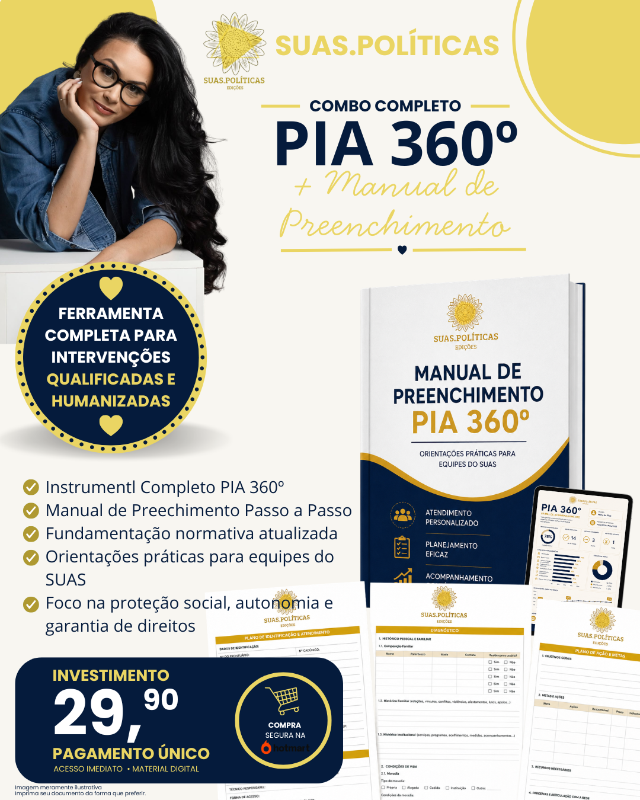

Gestão, supervisão, instrumentais e formações para quem atua no Sistema Único de Assistência Social.
Conheça os materiais
Sou Lígia Moreira de Andrade, Assistente Social, coordenadora de serviços socioassistenciais de alta complexidade, supervisora técnica e fundadora do SUAS.POLÍTICAS.
Há mais de 10 anos atuo na Política de Assistência Social, desenvolvendo projetos, instrumentais, processos de supervisão, gestão de equipes e estratégias voltadas à qualificação dos serviços ofertados à população.
Ao longo da minha trajetória profissional, compreendi que a qualidade dos serviços não depende apenas de legislações, fluxos e metodologias. Ela está diretamente relacionada às pessoas que diariamente sustentam o cuidado, tomam decisões complexas e lidam com os desafios inerentes à garantia de direitos.
Foi a partir dessa vivência que reconheci a importância de criar espaços de escuta qualificada, reflexão técnica e desenvolvimento profissional, capazes de fortalecer trabalhadores, equipes e gestores diante das exigências cada vez mais complexas presentes no cotidiano dos serviços.
O SUAS.POLÍTICAS nasceu desse propósito: transformar experiências práticas, conhecimento técnico e aprendizado construído na realidade dos serviços em ferramentas acessíveis, formações, supervisões e materiais que contribuam para intervenções mais seguras, qualificadas e humanizadas.
O SUAS.POLÍTICAS é uma iniciativa voltada ao desenvolvimento profissional, qualificação técnica e fortalecimento das práticas de trabalho de profissionais, equipes e organizações que atuam no Sistema Único de Assistência Social (SUAS) e demais políticas públicas relacionadas ao Sistema de Garantia de Direitos.
Por meio de supervisão técnica, consultorias, formações, produção de materiais especializados e espaços de escuta qualificada, buscamos promover maior segurança técnica, reflexão crítica e desenvolvimento profissional contínuo, contribuindo para a oferta de serviços cada vez mais qualificados à população.
Nossas ações são fundamentadas nos princípios da Educação Permanente, reconhecendo que a atualização permanente dos trabalhadores é elemento essencial para a garantia de direitos, fortalecimento das equipes e aprimoramento das intervenções profissionais.
Ofertamos supervisões, treinamentos, instrumentais, publicações e recursos técnicos desenvolvidos a partir das demandas reais dos serviços, transformando conhecimento em ferramentas práticas para o cotidiano profissional.

Instrumental completo para planejamento, acompanhamento e avaliação dos usuários. Inclui modelo editável e manual prático de preenchimento.
Comprar agora
Modelo editável do Plano Individual de Atendimento, pronto para utilização e adaptação aos serviços socioassistenciais.
Comprar agoraRecurso para supervisão técnica, reuniões de equipe, capacitações e desenvolvimento profissional no SUAS.
Comprar agora
Livro escrito pelo psicólogo Lucas A. Tavares e publicado pelo selo SUAS.POLÍTICAS Edições.
A obra nasceu do compromisso com a democratização do conhecimento e com a valorização de produções que contribuem para o cuidado emocional, a saúde mental e os processos de elaboração das perdas humanas.
Conhecer o livroA supervisão técnica é conduzida por meio de uma metodologia estruturada, desenvolvida para fortalecer competências profissionais, ampliar a capacidade analítica e qualificar as intervenções realizadas nos serviços socioassistenciais.
Avaliação inicial que permite identificar potencialidades, desafios, competências técnicas, habilidades relacionais e oportunidades de desenvolvimento profissional.
Ferramenta de registro e reflexão contínua sobre desafios, aprendizados, avanços e construção do desenvolvimento profissional.
Análise crítica de situações concretas da prática profissional, considerando aspectos éticos, normativos e metodológicos.
Seleção de materiais, legislações, normativas e referências técnicas de acordo com a especificidade de cada serviço.
Construção conjunta de metas e estratégias voltadas ao fortalecimento da atuação técnica e da tomada de decisões qualificadas.
Supervisão realizada de forma online ou presencial, conforme disponibilidade e necessidade do profissional ou instituição.
Mais do que oferecer respostas prontas, a supervisão busca desenvolver autonomia técnica, pensamento crítico e segurança profissional para atuação qualificada no SUAS.
As formações e treinamentos promovidos pelo SUAS.POLÍTICAS são desenvolvidos a partir das demandas reais dos serviços, buscando articular conhecimento técnico, reflexão crítica e aplicabilidade prática no cotidiano profissional.
Encontros voltados ao fortalecimento técnico das equipes, abordando temas relacionados à gestão, atendimento, instrumentais, legislação, trabalho em rede, ética profissional e execução dos serviços socioassistenciais.
Espaços de escuta, troca de experiências e construção coletiva do conhecimento, favorecendo a reflexão sobre desafios, potencialidades e práticas profissionais.
Metodologias participativas que estimulam o protagonismo dos participantes, a aprendizagem significativa e o desenvolvimento de competências técnicas e relacionais.
Aprofundamento em legislações, normativas, orientações técnicas, fluxos de trabalho e temas específicos relacionados às diversas políticas públicas e áreas de atuação profissional.
A depender da temática solicitada, as formações poderão contar com a participação de profissionais convidados, especialistas e parceiros com experiência reconhecida na área abordada.
Nosso objetivo é transformar conhecimento em prática, fortalecendo profissionais, equipes e organizações comprometidas com a garantia de direitos e a qualificação dos serviços ofertados à população.
66.259.697/0001-28